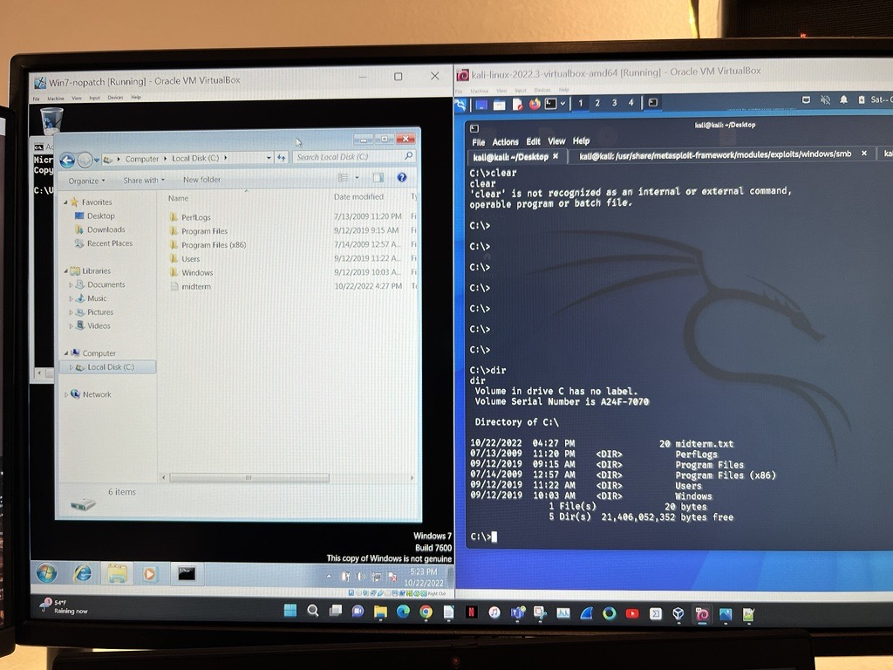
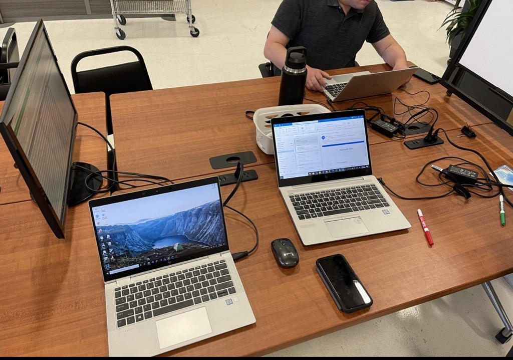
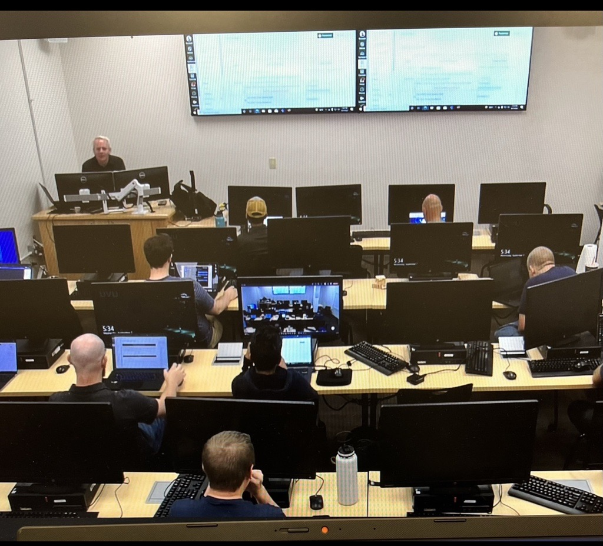
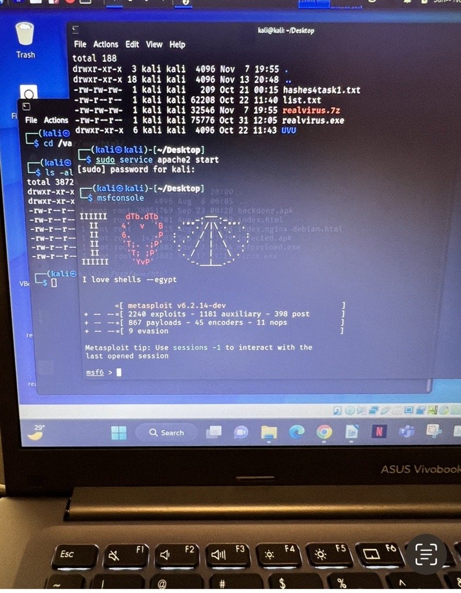
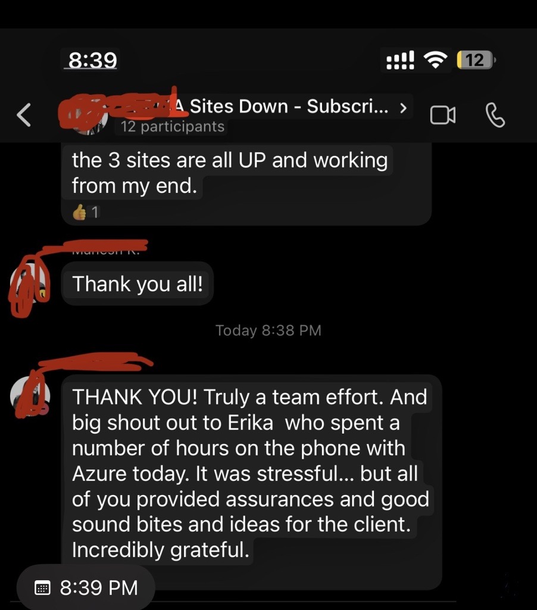

Erika Hernandez
IT & Cybersecurity Leader | Infrastructure, Security & Service Delivery
I help organizations modernize IT operations, strengthen cybersecurity posture, and build scalable technology environments that support business growth.
With 6+ years of experience across healthcare, education, and enterprise environments, I’ve led infrastructure modernization projects, compliance initiatives, service delivery improvements, and multi-site IT operations supporting 60+ locations and hundreds of users.
My background combines cybersecurity, systems administration, IT leadership, and workforce development — bridging technical execution with executive communication and operational strategy.
I specialize in:
• IT Operations & Infrastructure
• Cybersecurity & Risk Management
• Service Desk & Process Improvement
• Compliance (SOX, HIPAA, ITGC)
• Team Leadership & Technical Training
• Vendor & Project Management
Master’s in Cybersecurity | Instructor at Weber State University | Former Director of IT & Security
View Experience

Erika Hernandez combines technical expertise, cybersecurity leadership, and operational strategy to build secure, scalable, and people-focused technology environments. With experience leading infrastructure modernization, compliance initiatives, and multi-site IT operations, she brings the rare ability to translate complex technical challenges into clear business solutions.
Her background spans cybersecurity, systems administration, service delivery, and workforce development — allowing her to lead effectively across both technical and non-technical teams. Whether improving operational efficiency, strengthening security posture, or mentoring future IT professionals, Erika approaches every challenge with adaptability, accountability, and a strong focus on long-term impact.
Known for her calm leadership style, problem-solving mindset, and ability to communicate across all levels of an organization, Erika helps teams move forward with clarity, trust, and execution.
Secure systems. Strong teams. Scalable solutions.
Leading with Positivity: Erika Hernandez Inspires Teams and Drives Results

With her contagious positivity and collaborative spirit, Erika brings energy and focus to every project. Whether managing service desk operations or leading cross-functional IT initiatives, she inspires teams to exceed expectations. Her strategic mindset and forward-thinking approach help organizations implement scalable solutions that support long-term growth in today’s fast-paced digital landscape.
Cybersecurity-Focused IT Leader: Erika Hernandez Protects and Optimizes Business Operations

Erika is more than a technical expert—she’s a trusted cybersecurity and IT compliance leader. A 2024 Master’s graduate in Cybersecurity, she brings a proven ability to secure systems while aligning technology operations with regulatory standards.
She has overseen dozens of IT controls across SOX, Internal Audit (IA), and Cybersecurity (CYB) categories—ensuring systems remain compliant, resilient, and audit-ready. From user access reviews and Active Directory cleanups to software integration, server patching, and backup verifications, Erika leads with accountability and attention to detail.
Her experience managing complex compliance matrices (like those with 50+ controls and varying audit cycles) has saved organizations thousands and prevented risk exposure. Erika isn’t just managing checkboxes—she’s making IT and security work better, smarter, and safer.
Whether it's endpoint management, infrastructure optimization, or policy enforcement, Erika brings clarity and control to every layer of IT operations—making her an invaluable asset for any organization aiming to scale securely.
Adaptable and Strategic: Erika Hernandez Excels in Fast-Moving, High-Impact Environments

Erika thrives in dynamic environments—whether leading IT service delivery, mentoring support teams, or independently managing infrastructure upgrades. Her adaptability, technical versatility, and strong communication skills allow her to connect with stakeholders across all levels. She’s trusted to deliver high-impact results while maintaining strong working relationships in fast-changing business settings.
Empathetic IT Manager: Erika Hernandez Delivers Trusted Support Across Teams and Cultures

With a strong background in end-user support and bilingual fluency in Spanish and English, Erika is known for bridging communication gaps and restoring confidence during high-pressure situations. When a client faced a multi-site outage, Erika stepped in—spending hours on the phone with Microsoft Azure, coordinating across technical teams, and keeping stakeholders informed and calm.
Her ability to navigate the issue with empathy, composure, and clear communication earned immediate praise from teammates and leadership alike. Erika not only resolved the issue efficiently—she strengthened trust across the organization in the process.
As John C. Maxwell wrote in The 21 Irrefutable Laws of Leadership: "People buy into the leader before they buy into the vision." Erika’s leadership is built on empathy, trust, and action—delivering technical results while always keeping people at the center.
Resume & References – Last Updated
Below you'll find my current resume and a collection of professional references. My resume outlines my experience in IT leadership, cybersecurity, infrastructure management, and teaching. The reference section highlights feedback and recommendations from colleagues, direct reports, and executive leaders I’ve worked with across different industries. These documents together provide a comprehensive view of my professional background, leadership style, and the impact I've made on teams and organizations.
📄 Open or Download Resume
📄 Open or Download References